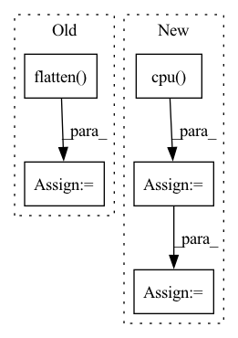

Pattern ID :26136

Before Change
observation, deterministic, return_log_prob=True
)[-1]
logits_pi = logits_pi.detach().cpu().numpy().flatten()
logits_adv = logits_adv.detach().cpu().numpy().flatten()
return action, log_pi, adv_log_pi, logits_pi, logits_adv
return action, log_pi, adv_log_pi
def compute_values(self, observations: Observation) -> np.ndarray:
After Change
params_pi = params_pi.detach().cpu().numpy().flatten()
params_adv = params_adv.detach().cpu().numpy().flatten()
else:
mean = actor_distrib.mean.detach().cpu().numpy().flatten()
scale = actor_distrib.scale.detach().cpu().numpy().flatten()
params_pi = np.concatenate([mean, scale], -1)
mean = adversary_distrib.mean.detach().cpu().numpy().flatten()
scale = adversary_distrib.scale.detach().cpu().numpy().flatten()
params_adv = np.concatenate([mean, scale], -1)
return action, log_pi, adv_log_pi, params_pi, params_adv
def compute_values(self, observations: Observation) -> np.ndarray:
In pattern: SUPERPATTERN
Frequency: 3
Non-data size: 5
Instances
Fragment ID: 78728496
Project Name: yfletberliac/adversarially-guided-actor-critic
Commit Name: 4958ecb8ca6e7e344852f7aa9fc8668cd8cd074b
Time: 2021-07-07
Author: cibeah.cb@gmail.com
File Name: agac_torch/agac/agac_ppo.py
M Class Name: PPO
N Class Name: PPO
M Method Name: select_action(3)
N Method Name: select_action(4)
M Parent Class:
N Parent Class:
M File Name: agac_torch/agac/agac_ppo.py
N File Name: agac_torch/agac/agac_ppo.py
M Start Line: 115
M End Line: 138
N Start Line: 121
N End Line: 146
'>
Before Change
pred = torch.ones_like(scores)
pred[scores <= .5] = 0
y_pred = pred.cpu().numpy().flatten()
auc_scores = scores.detach().cpu().numpy().flatten()
res = {
"accuracy": accuracy_score(y_true, y_pred),
"auc": roc_auc_score(y_true, auc_scores).astype(float) if len(set(y_true)) > 1 else .5,
After Change
}
if scores.shape[1] == 2:
auc_scores = scores[:, 1].detach().cpu().numpy().flatten()
if len(set(y_true)) == 2:
res["auc"] = roc_auc_score(y_true, auc_scores).astype(float)
else:
res["auc"] = 0.5 //TODO: warning
return res
'>
Fragment ID: 78728499
Project Name: makgyver/gossipy
Commit Name: 31a93a404f8bfba3869c5eb733962a438f4806f0
Time: 2021-08-29
Author: mak1788@gmail.com
File Name: gossipy/model/handler.py
M Class Name: TorchModelHandler
N Class Name: TorchModelHandler
M Method Name: evaluate(2)
N Method Name: evaluate(2)
M Parent Class: ModelHandler
N Parent Class: ModelHandler
M File Name: gossipy/model/handler.py
N File Name: gossipy/model/handler.py
M Start Line: 93
M End Line: 103
N Start Line: 99
N End Line: 123
'>
Before Change
other_idx = torch.where(condition1, other_idx, other_idx1) // (C, batch_size)
min_values, min_idx = torch.where(other_idx, values, values.max()).min(dim=-1)[0] // (C)
min_labels = labels.gather(dim=1, index=min_idx.unsqueeze(1)).flatten() // (C)
min_labels_counts = labels.eq(min_labels.unsqueeze(1)).int().sum(dim=1) // (C)
condition2 = min_labels.ge(self.n_samples - 2) // todo: Not sure: self.n_samples -> self.seed_num
idx_list = condition2.nonzero()[:self.top_n_neurons]
neuron_dict[layer] = {int(idx): int(min_labels[idx]) for idx in idx_list}
return neuron_dict
After Change
def find_min_max(self, all_ps: Dict[str, torch.Tensor], _label: torch.Tensor) -> Dict[str, Dict[int, float]]:
neuron_dict: Dict[str, Dict[int, float]] = {}
_label = _label.cpu()
for layer in all_ps.keys():
ps = all_ps[layer] // (C, n_samples, batch_size, num_classes)
vs: torch.Tensor = ps[:, self.n_samples // 5:].max(dim=1)[0] \
- ps[:, :self.n_samples // 5].min(dim=1)[0] // (C, batch_size, num_classes)
values, labels = vs.sort(dim=-1, descending=True)
condition1 = labels[:, :, 0].eq(_label) // exclude the ground-truth labels
values = torch.where(condition1, values[:, :, 1] - values[:, :, 2],
values[:, :, 0] - values[:, :, 1]) // (C, batch_size)
labels = torch.where(condition1, labels[:, :, 1], labels[:, :, 0]) // (C, batch_size)
mode_labels = labels.mode(keepdim=True)[0] // (C, 1) The most frequent label
mode_idx = labels.eq(mode_labels) // (C, batch_size)
mode_labels_counts = mode_idx.sum(dim=-1) // (C)
condition2 = mode_labels_counts.ge(self.seed_num * 0.75)
idx_list = condition2.nonzero().flatten().tolist()
idx_list = sorted(idx_list, key=lambda idx: float(values[idx][mode_idx[idx]].min()))[:self.top_n_neurons]
neuron_dict[layer] = {int(idx): int(mode_labels[idx]) for idx in idx_list}
prints("{green}{layer:<20}: {reset}".format(layer=layer, **ansi), indent=4)
'>
Fragment ID: 78728437
Project Name: ain-soph/trojanzoo
Commit Name: 1684c28ef38502abb83d37beb845b69007e33274
Time: 2020-07-07
Author: ain-soph@live.com
File Name: trojanzoo/defense/backdoor/abs.py
M Class Name: ABS
N Class Name: ABS
M Method Name: find_min_max(3)
N Method Name: find_min_max(3)
M Parent Class: Defense_Backdoor
N Parent Class: Defense_Backdoor
M File Name: trojanzoo/defense/backdoor/abs.py
N File Name: trojanzoo/defense/backdoor/abs.py
M Start Line: 210
M End Line: 225
N Start Line: 234
N End Line: 254